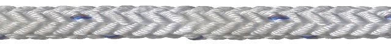

- Código
- 12COMP
- Diâmetro
- 18 a 144 mm
- Construção
- Trançado 12-pernas

Características
- Alta flexibilidade para manuseio
- Excelente resistência ao sol
- Alta resistência à ruptura
- Médio alongamento
- Flutuabilidade negativa
Uma blenda entre poliéster e polipropileno, que propicia alta durabilidade em aplicações com muita exposição a ação do sol, bem como uma alta resistência à ruptura.
É todo fabricado em multifilamento, o que garante boa flexibilidade e facilidade de manuseio.
Sua construção de 12-Pernas garante o torque balanceado e boa resposta à abrasão de quinas e superfícies afiadas.
Aplicações na linha Marine
- Amarração
Dados por diâmetro
18 mm144 mm
- Circ.(”)
- Massa Nominal (kg/100m)
- Massa Nominal (kg/220m)
- Carga mínima de ruptura (ton)
- Carga média de ruptura (ton)
Seção esquemática da construção, em escala com a moeda.
C12 · 12COMP
Tabela técnica
25 diâmetros. Selecione uma linha para ver os valores no quadro acima.
| Diâm.(mm) | Circ.(”) | Massa Nominal (kg/100m) | Massa Nominal (kg/220m) | Carga mínima de ruptura (ton) | Carga média de ruptura (ton) |
|---|---|---|---|---|---|
| 18 | 2 1/4 | 18 | 39 | 6,4 | 8,1 |
| 22 | 2 3/4 | 27 | 59 | 9,3 | 11,8 |
| 24 | 3 | 32 | 70 | 10,9 | 13,9 |
| 26 | 3 1/4 | 37 | 82 | 12,8 | 16,2 |
| 28 | 3 1/2 | 43 | 95 | 14,7 | 18,6 |
| 30 | 3 3/4 | 50 | 110 | 16,8 | 21 |
| 32 | 4 | 57 | 125 | 19 | 24 |
| 36 | 4 1/2 | 72 | 158 | 24 | 30 |
| 40 | 5 | 89 | 195 | 29 | 37 |
| 44 | 5 1/2 | 107 | 235 | 35 | 44 |
| 48 | 6 | 127 | 279 | 42 | 52 |
| 52 | 6 1/2 | 150 | 330 | 48 | 61 |
| 56 | 7 | 173 | 381 | 56 | 70 |
| 60 | 7 1/2 | 199 | 438 | 64 | 80 |
| 64 | 8 | 227 | 499 | 72 | 91 |
| 72 | 9 | 287 | 631 | 90 | 114 |
| 80 | 10 | 354 | 779 | 109 | 139 |
| 88 | 11 | 428 | 942 | 132 | 167 |
| 96 | 12 | 510 | 1.122 | 155 | 197 |
| 104 | 13 | 600 | 1.320 | 181 | 229 |
| 112 | 14 | 690 | 1.518 | 208 | 264 |
| 120 | 15 | 796 | 1.751 | 238 | 302 |
| 128 | 16 | 906 | 1.993 | 268 | 341 |
| 136 | 17 | 1.020 | 2.244 | 302 | 383 |
| 144 | 18 | 1.150 | 2.530 | 337 | 427 |
Linha Marine
Outros produtos da linha
- Victor · Dupla-Traça Híbrido48 a 264 mm
- Nylon2IN1 · Dupla-Trança Nylon48 a 264 mm
- Circular Nylon64 a 264 mm
- Bravíssimo · HMPE Dupla-Trança48 a 264 mm
- BRAVO12 · 12-Pernas HMPE10 a 96 mm
- MFP8 · 8-Pernas Polipropileno Multifilado18 a 144 mm
- MFP12 · 12-Pernas Polipropileno Multifilado18 a 144 mm
- PA12 · 12-Pernas Nylon18 a 144 mm
- PES12 · 12-Pernas Poliéster18 a 144 mm
- PP12 · 12-Pernas Polipropileno Monofilado18 a 144 mm
- PB12 · 12-Pernas Polyblend18 a 144 mm
- PES8 · 8-Pernas Poliéster18 a 144 mm
- PA8 · 8-Pernas Nylon18 a 144 mm
- C3 · 8-Pernas Composite18 a 144 mm
- PP8 · 8-Pernas Polipropileno Monofilado18 a 144 mm
- PB8 · 8-Pernas Polyblend18 a 144 mm
- Sierra80 a 292 mm
- PB3 · 3-Pernas Polyblend4 a 48 mm
- PA3 · 3-Pernas Poliamida (Nylon)3 a 48 mm
- PES3 · 3-Pernas Poliéster3 a 48 mm
- PP3 · 3-Pernas Polipropileno Monofilado4 a 48 mm
- MFP3 · 3-Pernas Polipropileno Multifilado4 a 48 mm
- BRAVO8 · 8-Pernas HMPE4 a 96 mm
- Circular HMPE48 a 264 mm